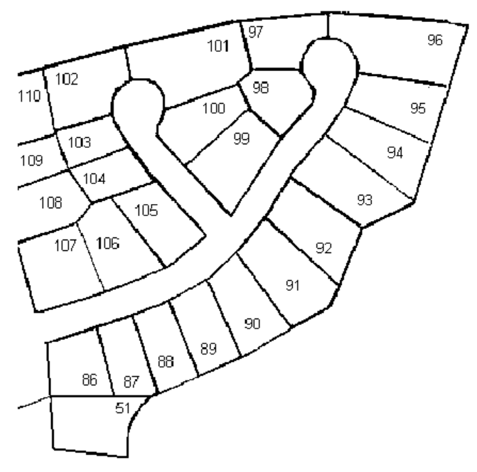
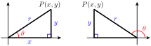

Section 3.1 Obtuse Angles
The town of Avery lies 48 miles due east of Baker, and Clio is 34 miles from Baker, in the direction \(35\degree\) west of north. How far is it from Avery to Clio?
We know how to solve right triangles using the trigonometric ratios. But the triangle formed by the three towns is not a right triangle, because it includes an obtuse angle of \(125\degree\) at \(B\text{,}\) as shown in the figure.
A triangle that is not a right triangle is called an oblique triangle. In this chapter we learn how to solve oblique triangles using the laws of sines and cosines. But first we must be able to find the sine, cosine, and tangent ratios for obtuse angles.
Subsection Angles in Standard Position
To extend our definition of the trigonometric ratios to obtuse angles, we use a Cartesian coordinate system. We put an angle \(\theta\) in standard position as follows:
Place the vertex at the origin with the initial side on the positive \(x\)-axis;
the terminal side opens in the counter-clockwise direction.
We choose a point \(P\) on the terminal side of the angle, and form a right triangle by drawing a vertical line from \(P\) to the \(x\)-axis.
The length of the side adjacent to \(\theta\) is the \(x\)-coordinate of point \(P\text{,}\) and the length of the side opposite is the \(y\)-coordinate of \(P\text{.}\) The length of the hypotenuse is the distance from the origin to \(P\text{,}\) which we call \(r\text{.}\) With this notation, our definitions of the trigonometric ratios are as follows.
Coordinate Definitions of the Trigonometric Ratios.
\(\displaystyle \cos (\theta) = \dfrac{x}{r}\)
\(\displaystyle \sin (\theta) = \dfrac{y}{r}\)
\(\displaystyle \tan (\theta) = \dfrac{y}{x}\)
It doesn’t matter which point \(P\) on the terminal side we use to calculate the trig ratios. If we choose some other point, say \(P^{\prime}\text{,}\) with coordinates \((x^{\prime}, y^{\prime})\text{,}\) as shown at right, we will get the same values for the sine, cosine and tangent of \(\theta\text{.}\) The new triangle formed is similar to the first one, so the ratios of the sides of the new triangle are equal to the corresponding ratios in the first triangle.
Example 3.1.
Find the values of cos \((\theta)\text{,}\) sin \((\theta)\text{,}\) and tan \((\theta)\) if the point \((12, 5)\) is on the terminal side of \(\theta\text{.}\)
Solution.
For the point \(P(12, 5)\text{,}\) we have \(x=12\) and \(y=5\text{.}\) We use the distance formula to find \(r\text{.}\)
\begin{align*}
r \amp = \sqrt{(2-0)^2 + (5-0)^2}\\
\amp = \sqrt{25+144} = \sqrt{169} = 13
\end{align*}
The trig ratios are
\begin{align*}
\cos (\theta) \amp = \dfrac{x}{r} = \dfrac{12}{13}\\
\sin (\theta) \amp = \dfrac{y}{r} = \dfrac{5}{13}\\
\tan (\theta) \amp = \dfrac{y}{x} = \dfrac{5}{12}
\end{align*}
Checkpoint 3.3.
Find the equation of the terminal side of the angle in the previous example. (Hint: The terminal side lies on a line that goes through the origin and the point \((12,5)\text{.}\))
Show that the point \(P^{\prime}(24, 10)\) also lies on the terminal side of the angle.
Compute the trig ratios for \(\theta\) using the point \(P^{\prime}\) instead of \(P\text{.}\)
Answer.
\(\displaystyle y = \dfrac{5}{12}x\)
\((24, 10)\) satisfies \(y = \dfrac{5}{12}x\text{,}\) that is, the equation \(10 = \dfrac{5}{12}(24)\) is true.
\(r^2 = 24^2 + 10^2 = 676\text{,}\) so
\(r = \sqrt{676} = 26.\) Then
\begin{gather*}
\cos (\theta) = \dfrac{x}{r} = \dfrac{24}{26} =\dfrac{12}{13}\\
\sin(\theta) = \dfrac{y}{r} = \dfrac{10}{26} =\dfrac{5}{13}\\
\tan(\theta) = \dfrac{y}{x} = \dfrac{10}{24} =\dfrac{5}{12}
\end{gather*}
Activity 3.1. Obtuse Angles.
Recall that an obtuse angle has measure between \(90\degree\) and \(180\degree\text{.}\) Use the coordinate definitions of the trig ratios described above to complete the Activity.
Draw an angle \(\theta\) in standard position with the point \(P(6,4)\) on its terminal side.
Find \(r\text{,}\) the distance from the origin to \(P\text{.}\)
Calculate \(\sin (\theta),~ \cos (\theta)\text{,}\) and \(\tan (\theta)\text{.}\) Give both exact answers and decimal approximations rounded to four places.
Use the inverse cosine key on your calculator to find \(\theta\text{.}\) Use your calculator to verify the values of \(\sin (\theta),~ \cos (\theta)\text{,}\) and \(\tan (\theta)\) that you found in part (3).
Draw another angle \(\phi\) in standard position with the point \(Q(-6,4)\) on its terminal side.
Explain why \(\phi\) is the supplement of \(\theta\text{.}\) (Hint: Consider the right triangles formed by drawing vertical lines from \(P\) and \(Q\text{.}\))
Can you use the right triangle definitions (using opposite, adjacent and hypotenuse) to compute the sine and cosine of \(\phi\text{?}\) Why or why not?
Calculate \(\sin (\phi),~ \cos (\phi)\text{,}\) and \(\tan (\phi)\) using the coordinate definitions. How are the trig values of \(\phi\) related to the trig values of \(\theta\text{?}\)
Explain why \(\theta\) and \(\phi\) have the same sine but different cosines.
Use the inverse cosine key on your calculator to find \(\phi\text{.}\) Use your calculator to verify the values of \(\sin (\phi),~ \cos (\phi)\text{,}\) and \(\tan (\phi)\) that you found above.
Compute \(180\degree-\phi\text{.}\) What answer should you expect to get?
Subsection Trigonometric Ratios for Obtuse Angles
Our new definitions for the trig ratios work just as well for obtuse angles, even though \(\theta\) is not technically “inside†a triangle, because we use the coordinates of \(P\) instead of the sides of a triangle to compute the ratios.
Notice first of all that because \(x\)-coordinates are negative in the second quadrant, the cosine and tangent ratios are both negative for obtuse angles. For example, in the figure below, the point \((-4, 3)\) lies on the terminal side of the angle \(\theta\text{.}\) We see that \(~~r = \sqrt{(-4)^2 + 3^2} = 5~~\text{,}\) so
\begin{align*}
\cos (\theta) \amp = \dfrac{x}{r} = \dfrac{-4}{5}\\
\sin (\theta) \amp = \dfrac{y}{r} = \dfrac{3}{5}\\
\tan (\theta) \amp = \dfrac{y}{x} = \dfrac{3}{-4} = \dfrac{-3}{4}
\end{align*}
Example 3.4.
Find the values of cos \((\theta)\) and tan \((\theta)\) if \(\theta\) is an obtuse angle with \(\sin (\theta) = \dfrac{1}{3}\text{.}\)
Solution.
Because \(\theta\) is obtuse, the terminal side of the angle lies in the second quadrant, as shown in the figure below. Because \(\sin (\theta) = \dfrac{1}{3}\text{,}\) we know that \(\dfrac{y}{r} = \dfrac{1}{3}\text{,}\) so we can choose a point \(P\) with \(y=1\) and \(r=3\text{.}\) To find cos \((\theta)\) and tan \((\theta)\) we need to know the value of \(x\text{.}\) From the Pythagorean Theorem,
\begin{align*}
x^2 + 1^2 \amp = 3^2\\
x^2 \amp = 3^2 - 1^2 = 8\\
x \amp = -\sqrt{8}
\end{align*}
Remember that \(x\) is negative in the second quadrant! Thus
\begin{equation*}
\cos (\theta) = \dfrac{x}{r} = \dfrac{-\sqrt{8}}{3}~~~~~ \text{and}~~~~~\tan (\theta) = \dfrac{y}{x} = \dfrac{-1}{\sqrt{8}}
\end{equation*}
Checkpoint 3.5.
Sketch an obtuse angle \(\theta\) whose cosine is \(\dfrac{-8}{17}\text{.}\)
Find the sine and the tangent of \(\theta\text{.}\)
Answer.
\(\sin(\theta) = \dfrac{15}{17}\text{,}\) \(\tan(\theta) = \dfrac{-15}{8}\)
Subsection Using a Calculator
In the Examples above, we used a point on the terminal side to find exact values for the trigonometric ratios of obtuse angles. Scientific and graphing calculators are programmed with approximations for these trig ratios.
Example 3.6.
Find the sine and cosine of \(130\degree\text{.}\) Compare to the sine and cosine of \(50\degree\text{.}\)
Solution.
Using a calculator and rounding the values to four places, we find
\begin{align*}
\sin (130\degree) \amp = 0.7660 ~~~~~ \text{and}~~~~~ \cos (130\degree) = -0.6428\\
\sin (50\degree) \amp = 0.7660 ~~~~~ \text{and}~~~~~~~ \cos (50\degree) = 0.6428
\end{align*}
We see that \(\sin (130\degree) = \sin (50\degree)\) and \(\cos (130\degree) = -\cos (50\degree)\text{.}\) This result should not be surprising when we look at both angles in standard position, as shown below.
The angles \(50\degree\) and \(130\degree\) are supplementary. The right triangles formed by choosing the points \((x,y)\) and \((-x,y)\) on their terminal sides are congruent triangles.
Consequently, the trigonometric ratios for \(50\degree\) and for \(130\degree\) are equal, except that the cosine of \(130\degree\) is negative.
Checkpoint 3.7.
Use your calculator to fill in the table. Round to four decimal places.
| \(\theta\) |
\(~~~~\cos (\theta)~~~~\) |
\(~~~~\sin (\theta)~~~~\) |
\(180\degree - \theta\) |
\(\cos (180\degree - \theta)\) |
\(\sin (180\degree - \theta)\) |
| \(10 \degree\) |
\(~\) |
\(~\) |
\(~\) |
\(~\) |
\(~\) |
| \(20 \degree\) |
\(~\) |
\(~\) |
\(~\) |
\(~\) |
\(~\) |
| \(30 \degree\) |
\(~\) |
\(~\) |
\(~\) |
\(~\) |
\(~\) |
| \(40 \degree\) |
\(~\) |
\(~\) |
\(~\) |
\(~\) |
\(~\) |
| \(50 \degree\) |
\(~\) |
\(~\) |
\(~\) |
\(~\) |
\(~\) |
| \(60 \degree\) |
\(~\) |
\(~\) |
\(~\) |
\(~\) |
\(~\) |
| \(70 \degree\) |
\(~\) |
\(~\) |
\(~\) |
\(~\) |
\(~\) |
| \(80 \degree\) |
\(~\) |
\(~\) |
\(~\) |
\(~\) |
\(~\) |
Answer.
| \(\theta\) |
\(~~~~\cos (\theta)~~~~\) |
\(~~~~\sin (\theta)~~~~\) |
\(180\degree - \theta\) |
\(\cos (180\degree - \theta)\) |
\(\sin (180\degree - \theta)\) |
| \(10 \degree\) |
\(0.9848\) |
\(0.1736\) |
\(170\degree\) |
\(-0.9848\) |
\(0.1736\) |
| \(20 \degree\) |
\(0.9397\) |
\(0.3420\) |
\(160\degree\) |
\(-0.9397\) |
\(0.3420\) |
| \(30 \degree\) |
\(0.8660\) |
\(0.5\) |
\(150\degree\) |
\(0.8660\) |
\(-0.5\) |
| \(40 \degree\) |
\(0.7660\) |
\(0.6428\) |
\(140\degree\) |
\(-0.7660\) |
\(0.6428\) |
| \(50 \degree\) |
\(0.6428\) |
\(0.7660\) |
\(130\degree\) |
\(-0.6428\) |
\(0.7660\) |
| \(60 \degree\) |
\(0.5\) |
\(0.8660\) |
\(120\degree\) |
\(-0.5\) |
\(0.8660\) |
| \(70 \degree\) |
\(0.3420\) |
\(0.9397\) |
\(110\degree\) |
\(-0.9397\) |
\(0.3420\) |
| \(80 \degree\) |
\(0.1736\) |
\(0.9848\) |
\(100\degree\) |
\(-0.9848\) |
\(0.1736\) |
Subsection Trigonometric Ratios for Supplementary Angles
The Examples above illustrate the following equations for supplementary angles. These three equations are called identities, which means that they are true for all values of the variable \(\theta\text{.}\)
Trigonometric Ratios for Supplementary Angles.
\(\displaystyle \cos(180\degree - \theta) = -\cos \theta\)
\(\displaystyle \sin(180\degree - \theta) = \sin \theta\)
\(\displaystyle \tan(180\degree - \theta) = -\tan \theta \)
Example 3.9.
Find two different angles \(\theta\text{,}\) rounded to the nearest \(0.1 \degree\text{,}\) that satisfy \(\sin (\theta) = 0.25\text{.}\)
Solution.
To find an angle with \(\sin (\theta) = 0.25\text{,}\) we calculate \(\theta = \sin^{-1}(0.25)\text{.}\) With the calculator in degree mode, we press
\(\qquad\qquad\qquad\)2nd SIN 0.25 ) ENTER
and find that one angle is \(\theta \approx 14.5 \degree\text{.}\) We draw this acute angle in standard position in the first quadrant, and sketch in a right triangle as shown below. There must also be an obtuse angle whose sine is \(0.25\text{.}\) To see the second angle, we draw a congruent triangle in the second quadrant as shown.
The supplement of \(14.5 \degree\text{,}\) namely \(\theta = 180\degree - 14.5 \degree = 165.5\degree\text{,}\) is the obtuse angle we need. Because the ratio \(\dfrac{y}{r}\) is the same for both triangles, they have the same sine.
Checkpoint 3.10.
Find two different angles \(\theta\) that satisfy \(\sin (\theta) = 0.5\text{.}\)
Answer.
\(\theta = 30\degree\text{,}\) \(~ \theta = 150\degree\)
Because there are two angles with the same sine, it is easier to find an obtuse angle if we know its cosine instead of its sine.
Example 3.11.
Find the angle shown at right.
Solution.
Using \(x=-3\) and \(y=4\text{,}\) we find
\begin{equation*}
r=\sqrt{3^2 + 4^2} = \sqrt{25} = 5
\end{equation*}
so \(\cos (\theta) = \dfrac{x}{r} = \dfrac{-3}{5}\text{,}\) and \(\theta = \cos^{-1}\left(\dfrac{-3}{5}\right).\) We can enter
\(\qquad\qquad\qquad\) 2nd COS -3 ÷ 5 ) ENTER
to see that \(\theta \approx 126.9 \degree\text{.}\)
Checkpoint 3.13.
Find the cosine of an obtuse angle with \(\tan (\theta) = -2\) .
Find the angle \(\theta\) in part (a).
Answer.
\(\displaystyle \dfrac{-1}{\sqrt{5}}\)
\(\displaystyle \theta \approx 116.565\degree\)
Subsection Supplements of the Special Angles
In Chapter 2 we learned that the angles \(30\degree, 45\degree\) and \(60\degree\) are useful because we can find exact values for their trigonometric ratios. The same is true for the supplements of these angles in the second quadrant, shown at right.
Example 3.14.
Find exact values for the trigonometric ratios of \(135 \degree\text{.}\)
Solution.
We sketch an angle of \(\theta = 135\degree\) in standard position, as shown below. The terminal side is in the second quadrant and makes an acute angle of \(45\degree\) with the negative \(x\)-axis, and passes through the point \((-1,1)\text{.}\) Thus, \(~r=\sqrt{(-1)^2 +1^2} = \sqrt{2}~\text{,}\) and we calculate
\begin{align*}
\cos (135\degree) \amp = \dfrac{x}{r} = \dfrac{-1}{\sqrt{2}}\\
\sin (135\degree) \amp = \dfrac{y}{r} = \dfrac{1}{\sqrt{2}}\\
\tan (135\degree) \amp = \dfrac{y}{x} = \dfrac{1}{-1} = -1
\end{align*}
Checkpoint 3.15.
Find exact values for the trigonometric ratios of \(120\degree\) and \(150\degree\text{.}\)
Answer.
| \(\theta\) |
\(\cos(\theta)\) |
\(\sin(\theta)\) |
\(\tan(\theta)\) |
| \(120\degree\) |
\(\dfrac{-1}{2} \) |
\(\dfrac{\sqrt{3}}{2}\) |
\(-\sqrt{3} \) |
| \(150\degree\) |
\(\dfrac{-\sqrt{3}}{2} \) |
\(\dfrac{1}{2} \) |
\(\dfrac{-1}{\sqrt{3}} \) |
We can also find the trig ratios for the quadrantal angles. These are the angles, including \(0\degree\text{,}\) \(90\degree\) and \(180\degree\text{,}\) whose terminal sides lie on one of the axes.
Example 3.16.
Find exact values for the trigonometric ratios of \(90\degree\text{.}\)
Solution.
The terminal side of a \(90\degree\) angle in standard position is the positive \(y\)-axis. If we take the point \(P(0,1)\) on the terminal side as shown at right, then \(x=0\) and \(y=1\text{.}\) Although we don’t have a triangle, we can still calculate a value for \(r\text{,}\) the distance from the origin to \(P\text{.}\)
\begin{equation*}
r = \sqrt{0^2 + 1^2} = 1
\end{equation*}
Our coordinate definitions for the trig ratios give us
\begin{equation*}
\cos (90\degree) = \dfrac{x}{r} = \dfrac{0}{1}~~~~~ \text{and}~~~~~\sin (90\degree) = \dfrac{y}{r} = \dfrac{1}{1}
\end{equation*}
so \(~\cos (90\degree) = 0~\) and \(~\sin (90\degree) = 1~.\) Also, \(~\tan (90\degree) = \dfrac{y}{x} = \dfrac{1}{0}~,\) so \(\tan (90\degree)\) is undefined.
Checkpoint 3.17.
Find exact values for the trigonometric ratios of \(180\degree\text{.}\)
Answer.
\(\cos (180\degree) = -1\text{,}\) \(~\sin (180\degree) = 0\text{,}\) \(~\tan (180\degree) = 0\)
Subsection The Area of a Triangle
The figure below shows part of the map for a new housing development, Pacific Shores. You are interested in the corner lot, number 86, and you would like to know the area of the lot in square feet. The sales representative for Pacific Shores provides you with the dimensions of the lot, but you don’t know a formula for the area of an irregularly shaped quadrilateral.

It occurs to you that you can divide the quadrilateral into two triangles, and find the area of each. Now, you know a formula for the area of a triangle in terms of its base and height, namely,
\begin{equation*}
A = \dfrac{1}{2}bh\text{,}
\end{equation*}
but unfortunately, you don’t know the height of either triangle.
However, you can easily measure the angles at the corners of the lot using the plot map and a protractor. You can check the values on the plot map for lot 86 shown above.
Using trigonometry, we can find the area of a triangle if we know two of its sides, say \(a\) and \(b\text{,}\) and the included angle, \(\theta\text{.}\) The figure below shows three possibilities, depending on whether the angle \(\theta\) is acute, obtuse, or \(90\degree\text{.}\)
In each case, \(b\) is the base of the triangle, and its altitude is \(h\text{.}\) Our task is to find an expression for \(h\) in terms of the quantities we know: \(a\text{,}\) \(b\text{,}\) and \(\theta\text{.}\) You should check that in all three triangles
\begin{equation*}
\sin (\theta) = \dfrac{h}{a}
\end{equation*}
Solving for \(h\) gives us \(h = a\sin (\theta)\text{.}\) Finally, we substitute this expression for \(h\) into our old formula for the area to get
\begin{equation*}
A = \dfrac{1}{2}b~\blert{h} = \dfrac{1}{2}b~ \blert{a\sin (\theta)}
\end{equation*}
Area of a Triangle.
If a triangle has sides of length \(a\) and \(b\text{,}\) and the angle between those two sides is \(\theta\text{,}\) then the area of the triangle is given by
\begin{equation*}
\blert{A = \dfrac{1}{2} ab \sin (\theta)}
\end{equation*}
Example 3.18.
Find the area of lot 86.
Solution.
For the triangle in the lower portion of lot 86, \(a = 120.3\text{,}\) \(b = 141\text{,}\) and \(\theta = 95\degree\text{.}\) The area of that portion is
\begin{align*}
\text{First Area}\amp = \dfrac{1}{2}ab\sin (\theta)\\
\amp = \dfrac{1}{2} (120.3)((141)~\sin (95\degree) \approx 8448.88
\end{align*}
For the triangle in the upper portion of the lot, \(a = 161\text{,}\) \(b = 114.8\text{,}\) and \(\theta = 86.1\degree\text{.}\) The area of that portion is
\begin{align*}
\text{Second Area}\amp = \dfrac{1}{2}ab\sin (\theta)\\
\amp = \dfrac{1}{2} (161)((114.8)~\sin (86.1\degree) \approx 9220.00
\end{align*}
The total area of the lot is the sum of the areas of the triangles
\begin{equation*}
\text{Total area} = \text{First Area} + \text{Second Area}\approx 17668.88
\end{equation*}
Lot 86 has an area of approximately 17,669 square feet.
Checkpoint 3.20.
A triangle has sides of length 6 and 7, and the angle between those sides is \(150\degree\text{.}\) Find the area of the triangle.
Review the following skills you will need for this section.
Algebra Refresher 3.2.
Find the area of the triangle.
How many degrees are in each fraction of one complete revolution?
\(\underline{\qquad\qquad\qquad\qquad}\)
Algebra Refresher Answers
\(\displaystyle 24\)
\(\displaystyle 24\)
\(\displaystyle 24\)
\(\displaystyle 24\)
\(\displaystyle 90\degree\)
\(\displaystyle 72\degree\)
\(\displaystyle 60\degree\)
\(\displaystyle 45\degree\)
Subsection Section 3.1 Summary
Subsubsection Vocabulary
Standard position
Initial side
Terminal side
Quadrantal angle
Oblique triangle
Quadrilateral
Identity
Subsubsection Concepts
We put an angle in standard position by placing its vertex at the origin and the initial side on the positive \(x\)-axis.
Coordinate Definitions of the Trigonometric Ratios.
\(\displaystyle \cos (\theta) = \dfrac{x}{r}\)
\(\displaystyle \sin (\theta) = \dfrac{y}{r}\)
\(\displaystyle \tan (\theta) = \dfrac{y}{x}\)

Trigonometric Ratios for Supplementary Angles.
\(\displaystyle \cos(180\degree - \theta) = -\cos \theta\)
\(\displaystyle \sin(180\degree - \theta) = \sin \theta\)
\(\displaystyle \tan(180\degree - \theta) = -\tan \theta \)
There are always two (supplementary) angles between \(0\degree\) and \(180\degree\) that have the same sine. Your calculator will only tell you one of them.
Area of a Triangle.
If a triangle has sides of length \(a\) and \(b\text{,}\) and the angle between those two sides is \(\theta\text{,}\) then the area of the triangle is given by
\begin{equation*}
A = \dfrac{1}{2} ab \sin (\theta)
\end{equation*}
Subsubsection Study Questions
-
Delbert says that \(\sin (\theta) = \dfrac{4}{7}\) in the figure. Is he correct? Why or why not?
-
Give the lengths of the legs of each right triangle.
-
Explain why the length of the horizontal leg of the right triangle is \(-x\) .
Why are the sines of supplementary angles equal, but the cosines are not? What about the tangents of supplementary angles?
Use your calculator to evaluate \(\sin (118\degree)\text{,}\) then evaluate \(\sin^{-1} \text{(ANS)}\) . Explain the result.
Write an expression for the area of the triangle.
Subsubsection Skills
Practice each skill in the Homework Problems listed.
Use the coordinate definition of the trig ratios #3-20, 45-48
Find the trig ratios of supplementary angles #7-10, 21-38
Know the trig ratios of the special angles in the second quadrant #21, 41-44
Find two solutions of the equation \(\sin (\theta) = k\) #29-38
Find the area of a triangle #49-58
Exercises Homework 3.1
1.
Without using pencil and paper or a calculator, give the supplement of each angle.
\(\displaystyle 30\degree\)
\(\displaystyle 45\degree\)
\(\displaystyle 120\degree\)
\(\displaystyle 25\degree\)
\(\displaystyle 165\degree\)
\(\displaystyle 110\degree\)
2.
Without using pencil and paper or a calculator, give the complement of each angle.
\(\displaystyle 60\degree\)
\(\displaystyle 80\degree\)
\(\displaystyle 25\degree\)
\(\displaystyle 18\degree\)
\(\displaystyle 64\degree\)
\(\displaystyle 47\degree\)
Exercise Group.
For Problems 3–6,
Give the coordinates of point \(P\) on the terminal side of the angle.
Find the distance from the origin to point \(P\text{.}\)
Find \(\cos (\theta),~\sin (\theta),\) and \(~\tan (\theta).\)
Exercise Group.
For Problems 7–10,
Find the sine and cosine of the angle.
Sketch the supplement of the angle in standard position. (Use congruent triangles.)
Find the sine and cosine of the supplement.
Find the angle and its supplement, rounded to the nearest degree.
Exercise Group.
For Problems 11–20,
Sketch an angle in standard position with the given properties.
Find \(\cos (\theta),~~\sin (\theta),\) and \(\tan (\theta).\)
Find the angle \(\theta \text{,}\) rounded to tenths of a degree.
11.
The point \((-5, 12)\) is on the terminal side.
12.
The point \((12, 9)\) is on the terminal side.
13.
\(\cos \theta = -0.8\)
14.
\(\cos (\theta) = \dfrac{5}{13}\)
15.
\(\cos (\theta) = \dfrac{3}{11}\)
16.
\(\cos (\theta) = \dfrac{-5}{6}\)
17.
\(\tan (\theta) = \dfrac{-1}{6}\)
18.
\(\tan (\theta) = \dfrac{9}{5}\)
19.
\(\tan (\theta) = 4\)
20.
\(\tan (\theta) = -1\)
21.
Fill in exact values from memory without using a calculator.
| \(\theta\) |
\(~~~0\degree~~~\) |
\(~~~30\degree~~~\) |
\(~~~45\degree~~~\) |
\(~~~60\degree~~~\) |
\(~~~90\degree~~~\) |
\(~~~120\degree~~~\) |
\(~~~135\degree~~~\) |
\(~~~150\degree~~~\) |
\(~~~180\degree~~~\) |
| \(\cos (\theta)\) |
\(~\) |
\(~\) |
\(~\) |
\(~\) |
\(~\) |
\(~\) |
\(~\) |
\(~\) |
\(~\) |
| \(\sin (\theta)\) |
\(~\) |
\(~\) |
\(~\) |
\(~\) |
\(~\) |
\(~\) |
\(~\) |
\(~\) |
\(~\) |
| \(\tan (\theta)\) |
\(~\) |
\(~\) |
\(~\) |
\(~\) |
\(~\) |
\(~\) |
\(~\) |
\(~\) |
\(~\) |
22.
Use your calculator to fill in the table. Round values to four decimal places.
| \(\theta\) |
\(~~~15\degree~~~\) |
\(~~~25\degree~~~\) |
\(~~~65\degree~~~\) |
\(~~~75\degree~~~\) |
\(~~~105\degree~~~\) |
\(~~~115\degree~~~\) |
\(~~~155\degree~~~\) |
\(~~~165\degree~~~\) |
| \(\cos (\theta)\) |
\(~\) |
\(~\) |
\(~\) |
\(~\) |
\(~\) |
\(~\) |
\(~\) |
\(~\) |
| \(\sin (\theta)\) |
\(~\) |
\(~\) |
\(~\) |
\(~\) |
\(~\) |
\(~\) |
\(~\) |
\(~\) |
| \(\tan (\theta)\) |
\(~\) |
\(~\) |
\(~\) |
\(~\) |
\(~\) |
\(~\) |
\(~\) |
\(~\) |
23.
For each angle \(\theta\) in the table for Problem 22, the angle \(180\degree - \theta\) is also in the table.
What is true about \(\sin (\theta)\) and \(\sin (180\degree - \theta)\text{?}\)
What is true about \(\cos (\theta)\) and \(\cos (180\degree - \theta)\text{?}\)
What is true about \(\tan (\theta)\) and \(\tan (180\degree - \theta)\text{?}\)
24.
Describe and explain any patterns of equal values you see in the table for Problem 22.
Exercise Group.
For Problems 25–28,
Evaluate each pair of angles to the nearest \(0.1\degree\text{,}\) and show that they are supplements.
Sketch both angles.
Find the sine of each angle.
25.
\(\theta = \cos^{-1} \left(\dfrac{3}{4}\right)\text{,}\) \(~ \phi = \cos^{-1} \left(\dfrac{-3}{4}\right)\)
26.
\(\theta = \cos^{-1} \left(\dfrac{1}{5}\right)\text{,}\) \(~ \phi = \cos^{-1} \left(\dfrac{-1}{5}\right)\)
27.
\(\theta = \cos^{-1} (0.1525)\text{,}\) \(~ \phi = \cos^{-1} (-0.1525)\)
28.
\(\theta = \cos^{-1} (0.6825)\text{,}\) \(~ \phi = \cos^{-1} (-0.6825)\)
Exercise Group.
For Problems 29–34, find two different angles that satisfy the equation. Round to the nearest \(0.1\degree\text{.}\)
29.
\(\sin (\theta) = 0.7\)
30.
\(\sin (\theta) = 0.1\)
31.
\(\dfrac{\sin (\theta)}{6} = 0.14\)
32.
\(\dfrac{5}{\sin (\theta)} = 6\)
33.
\(4.8 = \dfrac{3.2}{\sin (\theta)}\)
34.
\(1.5 = \dfrac{\sin (\theta)}{0.3}\)
Exercise Group.
For Problems 35–38, fill in the blanks with complements or supplements.
35.
If \(~\sin (57\degree) = q~\text{,}\) then \(~\sin (\fillinmath{XXXXXX}) = q~\) also, \(~\cos (\fillinmath{XXXXXX}) = q~\text{,}\) and \(~\cos (\fillinmath{XXXXXX}) = -q\text{.}\)
36.
If \(~\sin (18\degree) = w~\text{,}\) then \(~\sin (\fillinmath{XXXXXX}) = w~\) also, \(~\cos (\fillinmath{XXXXXX}) = w~\text{,}\) and \(~ \cos (\fillinmath{XXXXXX}) = -w\text{.}\)
37.
If \(~\cos (74\degree) = m~\text{,}\) then \(\cos (\fillinmath{XXXXXX}) = -m~\text{,}\) and \(~\sin (\fillinmath{XXXXXX})~\) and \(~\sin (\fillinmath{XXXXXX})~\) both equal \(m\text{.}\)
38.
If \(~\cos (36\degree) = t~\text{,}\) then \(~\cos (\fillinmath{XXXXXX}) = -t~\text{,}\) and \(~\sin (\fillinmath{XXXXXX})\) and \(~\sin (\fillinmath{XXXXXX})\) both equal \(t\text{.}\)
39.
Sketch the line \(y = \dfrac{3}{4}x\text{.}\)
Find two points on the line with positive \(x\)-coordinates.
The line \(y = \dfrac{3}{4}x\) makes an angle with the positive \(x\)-axis. What is that angle?
Repeat parts (a) through (c) for the line \(y = \dfrac{-3}{4}x\text{,}\) except find two points with negative \(x\)-coordinates.
40.
Sketch the line \(y = \dfrac{5}{3}x\text{.}\)
Find two points on the line with positive \(x\)-coordinates.
The line \(y = \dfrac{5}{3}x\) makes an angle with the positive \(x\)-axis. What is that angle?
Repeat parts (a) through (c) for the line \(y = \dfrac{-5}{3}x\text{,}\) except find two points with negative \(x\)-coordinates.
Exercise Group.
For Problems 41–44,
Find exact values for the base and height of the triangle.
Compute an exact value for the area of the triangle.
45.
Sketch an angle of \(120\degree\) in standard position. Find the missing coordinates of the points on the terminal side.
\(\displaystyle (-1, ?)\)
\(\displaystyle (?, 3)\)
46.
Sketch an angle of \(150\degree\) in standard position. Find the missing coordinates of the points on the terminal side.
\(\displaystyle (?, 2)\)
\(\displaystyle (-4, ?)\)
47.
Sketch an angle of \(135\degree\) in standard position. Find the missing coordinates of the points on the terminal side.
\(\displaystyle (?, 3)\)
\(\displaystyle (-\sqrt{5}, ?)\)
48.
Use a sketch to explain why \(\cos (90\degree) = 0\text{.}\)
Use a sketch to explain why \(\cos (180\degree) = 1\text{.}\)
Exercise Group.
For Problems 49–54, find the area of the triangle with the given properties. Round your answer to two decimal places.
49.
50.
51.
52.
54.
\(a = 0.8\) m, \(c = 0.15\) m, \(B = 15\degree\)
55.
Find the area of the regular pentagon shown at right. (Hint: The pentagon can be divided into five congruent triangles.)
56.
Find the area of the regular hexagon shown at right. (Hint: The hexagon can be divided into six congruent triangles.)
Exercise Group.
For Problems 57 and 58, lots from a housing development have been subdivided into triangles. Find the total area of each lot by computing and adding the areas of each triangle.
Exercise Group.
For Problems 59 and 60,
Find the coordinates of point \(P\text{.}\) Round to two decimal places.
Find the sides \(BC\) and \(PC\) of \(\triangle PCB\text{.}\)
Find side \(PB\text{.}\)
61.
Later we will be able to show that \(\sin (18\degree) = \dfrac{\sqrt{5} - 1}{4}\text{.}\) What is the exact value of \(\sin (162\degree)?\) (Hint: Sketch both angles in standard position.)
62.
Later we will be able to show that \(\cos (36\degree) = \dfrac{\sqrt{5} + 1}{4}\text{.}\) What is the exact value of \(\cos (144\degree)?\) (Hint: Sketch both angles in standard position.)
63.
Alice wants an obtuse angle \(\theta\) that satisfies \(\sin (\theta) = 0.3\text{.}\) Bob presses some buttons on his calculator and reports that \(\theta = 17.46\degree\text{.}\) Explain Bob’s error and give a correct approximation of \(\theta\) accurate to two decimal places.
64.
Yaneli finds that the angle \(\theta\) opposite the longest side of a triangle satisfies \(\sin (\theta) = 0.8\text{.}\) Zelda reports that \(\theta = 53.13\degree\text{.}\) Explain Zelda’s error and give a correct approximation of \(\theta\) accurate to two decimal places.
Exercise Group.
For Problems 65–70,
Sketch an angle \(\theta\) in standard position, \(0\degree \le \theta \le 180\degree\text{,}\) with the given properties.
Find expressions for \(\cos (\theta), ~\sin (\theta)\text{,}\) and \(\tan (\theta)\) in terms of the given variable.
65.
\(\cos (\theta) = \dfrac{x}{3}, ~ x \lt 0\)
66.
\(\tan (\theta) = \dfrac{4}{\alpha}, ~ \alpha \lt 0\)
67.
\(\theta\) is obtuse and \(\sin (\theta) = \dfrac{y}{2}\)
68.
\(\theta\) is obtuse and \(\tan (\theta) = \dfrac{q}{-7}\)
69.
\(\theta\) is obtuse and \(\tan (\theta) = m\)
70.
\(\cos (\theta) = h\)